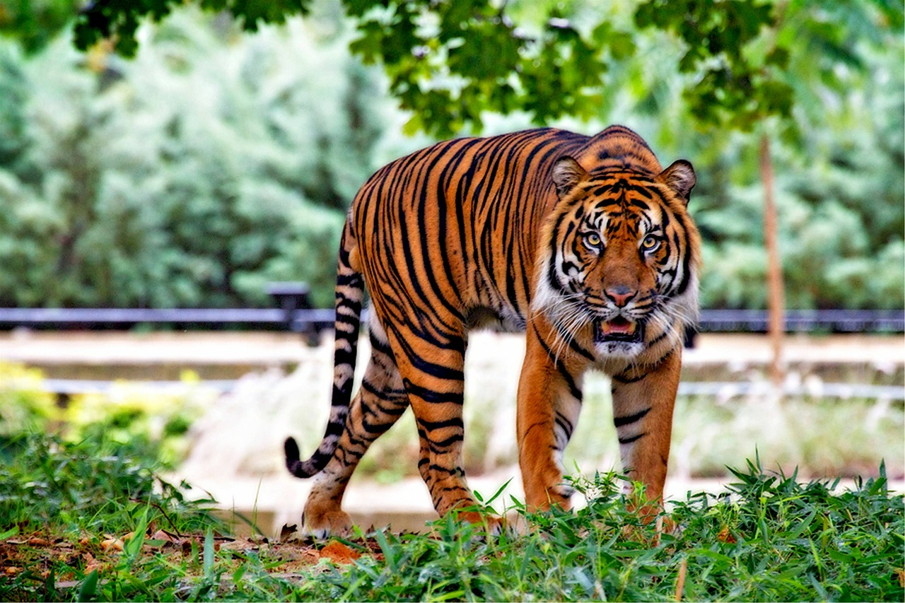
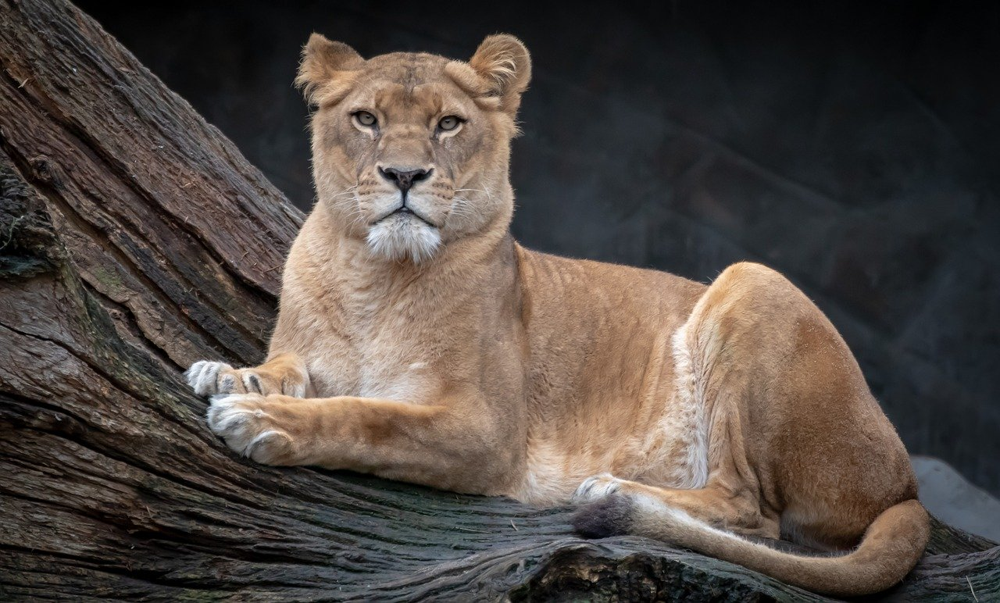
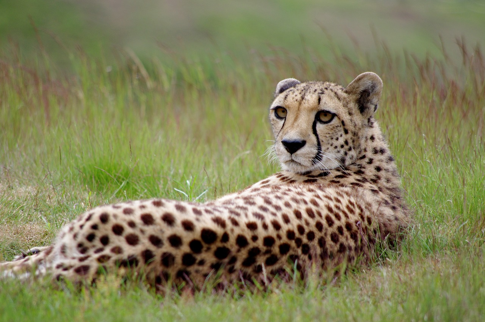
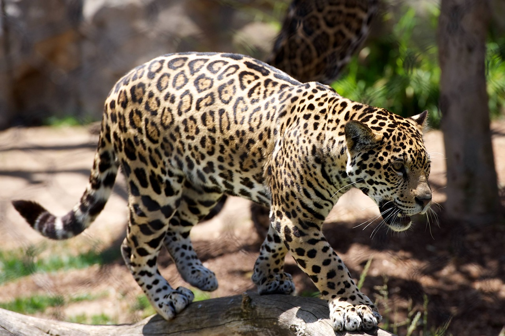

Welcome to the Big Cats
The term "big cat" is typically used to refer to any of the five living members of the genus Panthera, namely tiger, lion, jaguar, leopard, and snow leopard.[1] Except the snow leopard, these species are able to roar. A more liberal and expansive definition of the term includes species outside of Panthera including the cougar, clouded leopard, Sunda clouded leopard, cheetah and sometimes the several lynx species, although these added species also do not roar.[2].
Despite enormous differences in size, various cat species are quite similar in both structure and behaviour, with the exception of the cheetah, which significantly stands out from the other big and small cats. All cats are carnivores and some are efficient apex predators.[3] Their native ranges include the Americas, Africa, and Asia.
Sumatran Tiger

The Sumatran tiger is a Panthera tigris sondaica population in the Indonesian island of Sumatra.[2][3] This population was listed as Critically Endangered on the IUCN Red List in 2008, as it was estimated at 441 to 679 individuals, with no subpopulation larger than 50 individuals and a declining trend.[1]
The Sumatran tiger is the only surviving tiger population in the Sunda Islands, where the Bali and Javan tigers are extinct.[4] Sequences from complete mitochondrial genes of 34 tigers support the hypothesis that Sumatran tigers are diagnostically distinct from mainland subspecies.[5]
In 2017, the Cat Classification Task Force of the Cat Specialist Group revised felid taxonomy and recognizes the living and extinct tiger populations in Indonesia as P. t. sondaica.[2]
For More Information, please visit: https://en.wikipedia.org/wiki/Sumatran_tiger
Lions
The lion (Panthera leo) is a species in the family Felidae; it is a muscular, deep-chested cat with a short, rounded head, a reduced neck and round ears, and a hairy tuft at the end of its tail. It is sexually dimorphic; adult male lions have a prominent mane, which is the most recognisable feature of the species. With a typical head-to-body length of 184–208 cm (72–82 in) they are larger than females at 160–184 cm (63–72 in). It is a social species, forming groups called prides. A lion pride consists of a few adult males, related females and cubs. Groups of female lions usually hunt together, preying mostly on large ungulates. The lion is an apex and keystone predator, although some lions scavenge when opportunities occur, and have been known to hunt humans, although the species typically does not.
Typically, the lion inhabits grasslands and savannas, but is absent in dense forests. It is usually more diurnal than other big cats, but when persecuted it adapts to being active at night and at twilight. In the Pleistocene, the lion ranged throughout Eurasia, Africa and North America, but today it has been reduced to fragmented populations in Sub-Saharan Africa and one critically endangered population in western India. It has been listed as Vulnerable on the IUCN Red List since 1996 because populations in African countries have declined by about 43% since the early 1990s. Lion populations are untenable outside designated protected areas. Although the cause of the decline is not fully understood, habitat loss and conflicts with humans are the greatest causes for concern.
One of the most widely recognised animal symbols in human culture, the lion has been extensively depicted in sculptures and paintings, on national flags, and in contemporary films and literature. Lions have been kept in menageries since the time of the Roman Empire and have been a key species sought for exhibition in zoological gardens across the world since the late 18th century. Cultural depictions of lions were prominent in the Upper Paleolithic period; carvings and paintings from the Lascaux and Chauvet Caves in France have been dated to 17,000 years ago, and depictions have occurred in virtually all ancient and medieval cultures that coincided with the lion's former and current ranges.
For More Information, please visit: https://en.wikipedia.org/wiki/Lion
Male Lion

Male lions possess an iconic mane that encircles their head; females do not. Fully mature males weigh between 330 and 550 lbs.
Female Lion

Females weigh between 265 and 395 lbs. Males can reach lengths of 10 feet (including tail), and females are generally less than 9 feet long.
Cheeta
 Cheeta (sometimes billed as Cheetah, Cheta, and Chita) is a chimpanzee character that appeared in numerous Hollywood Tarzan films of the 1930s–1960s, as well as the 1966–1968 television series, as the ape sidekick of the title character, Tarzan. Cheeta has usually been characterized as male, but sometimes as female, and has been portrayed by chimpanzees of both sexes.
While the character of Cheeta is inextricably associated in the public mind with Tarzan, no chimpanzees appear in the original Tarzan novels by Edgar Rice Burroughs that inspired the films. The closest analog to Cheeta in the Burroughs novels is Tarzan's monkey companion Nkima, which appears in several of the later books in the series.
For More Information, please visit: https://en.wikipedia.org/wiki/Cheeta
Cougar
 The cougar (Puma concolor) is a large felid of the subfamily Felinae. It is native to the Americas.[1] Its range spans from the Canadian Yukon to the southern Andes in South America, and is the widest of any large wild terrestrial mammal in the Western Hemisphere. It is an adaptable, generalist species, occurring in most American habitat types.[3] Due to its wide range, it has many names including puma, mountain lion, red tiger, and catamount.[4]
The cougar (Puma concolor) is a large felid of the subfamily Felinae. It is native to the Americas.[1] Its range spans from the Canadian Yukon to the southern Andes in South America, and is the widest of any large wild terrestrial mammal in the Western Hemisphere. It is an adaptable, generalist species, occurring in most American habitat types.[3] Due to its wide range, it has many names including puma, mountain lion, red tiger, and catamount.[4]
For More Information, please visit: https://en.wikipedia.org/wiki/Cougar
Leopard
 The leopard (Panthera pardus) is one of the five extant species in the genus Panthera, a member of the Felidae.[4] It occurs in a wide range in sub-Saharan Africa, in small parts of Western and Central Asia, on the Indian subcontinent to Southeast and East Asia. It is listed as Vulnerable on the IUCN Red List because leopard populations are threatened by habitat loss and fragmentation, and are declining in large parts of the global range. In Hong Kong, Singapore, Kuwait, Syria, Libya, Tunisia and most likely in Morocco, leopard populations have already been extirpated.[3] Contemporary records suggest that the leopard occurs in only 25% of its historical global range.[5][6]
For More Information, please visit: https://en.wikipedia.org/wiki/Leopard
 My Virtual Zoo
My Virtual Zoo